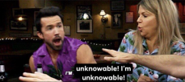

Guess Whoo?
The Muffin Man?

This is a blog.
A blog (a truncation of "weblog")[1] is a discussion or informational website published on the World Wide Web consisting of discrete, often informal diary-style text entries (posts). Posts are typically displayed in reverse chronological order, so that the most recent post appears first, at the top of the web page. Until 2009, blogs were usually the work of a single individual,[citation needed] occasionally of a small group, and often covered a single subject or topic. In the 2010s, "multi-author blogs" (MABs) emerged, featuring the writing of multiple authors and sometimes professionally edited. MABs from newspapers, other media outlets, universities, think tanks, advocacy groups, and similar institutions account for an increasing quantity of blog traffic. The rise of Twitter and other "microblogging" systems helps integrate MABs and single-author blogs into the news media. Blog can also be used as a verb, meaning to maintain or add content to a blog.
The emergence and growth of blogs in the late 1990s coincided with the advent of web publishing tools that facilitated the posting of content by non-technical users who did not have much experience with HTML or computer programming. Previously, a knowledge of such technologies as HTML and File Transfer Protocol had been required to publish content on the Web, and early Web users therefore tended to be hackers and computer enthusiasts. In the 2010s, the majority are interactive Web 2.0 websites, allowing visitors to leave online comments, and it is this interactivity that distinguishes them from other static websites.[2] In that sense, blogging can be seen as a form of social networking service. Indeed, bloggers not only produce content to post on their blogs but also often build social relations with their readers and other bloggers.[3] However, there are high-readership blogs which do not allow comments.
Many blogs provide commentary on a particular subject or topic, ranging from philosophy, religion, and arts to science, politics, and sports. Others function as more personal online diaries or online brand advertising of a particular individual or company. A typical blog combines text, digital images, and links to other blogs, web pages, and other media related to its topic. The ability of readers to leave publicly viewable comments, and interact with other commenters, is an important contribution to the popularity of many blogs. However, blog owners or authors often moderate and filter online comments to remove hate speech or other offensive content. Most blogs are primarily textual, although some focus on art (art blogs), photographs (photoblogs), videos (video blogs or "vlogs"), music (MP3 blogs), and audio (podcasts). In education, blogs can be used as instructional resources; these are referred to as edublogs. Microblogging is another type of blogging, featuring very short posts.
'Blog' and 'blogging' are now loosely used for content creation and sharing on social media, especially when the content is long-form and one creates and shares content on regular basis. So, one could be maintaining a blog on Facebook or blogging on Instagram.
On February 16, 2011, there were over 156 million public blogs in existence. On February 20, 2014, there were around 172 million Tumblr[4] and 75.8 million WordPress[5] blogs in existence worldwide. According to critics and other bloggers, Blogger is the most popular blogging service used today. However, Blogger does not offer public statistics.[6][7] Technorati lists 1.3 million blogs as of February 22, 2014.[8]
More like this:
- Why Blog?
- Who Blog?
- How Many Blog?
We have the answers.
Or do we................................
.......................................
